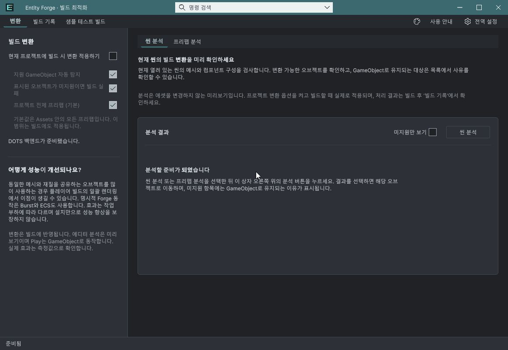
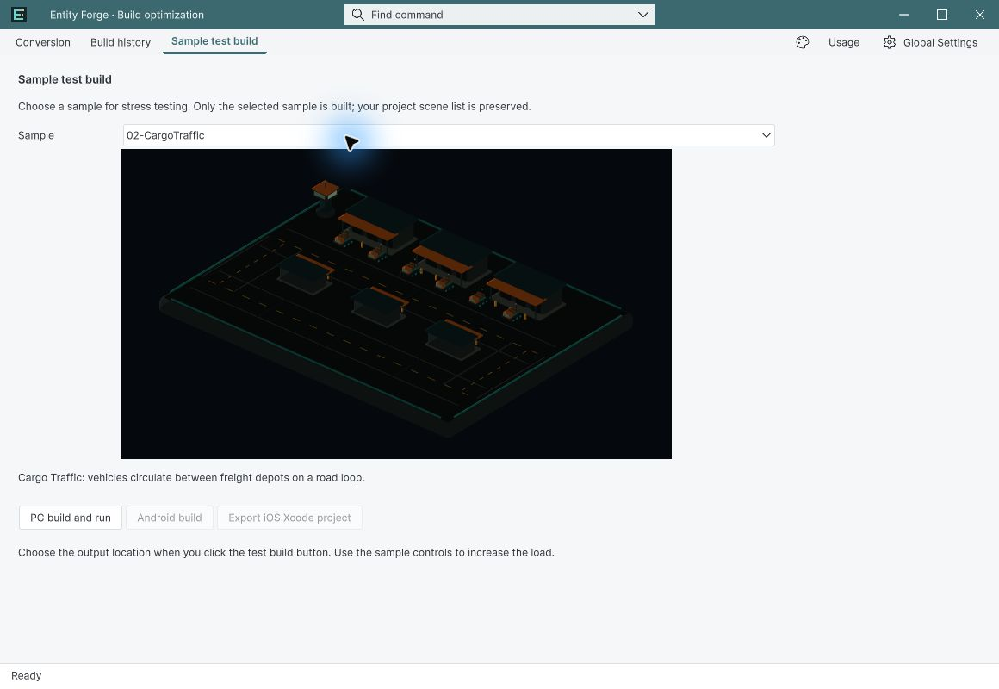
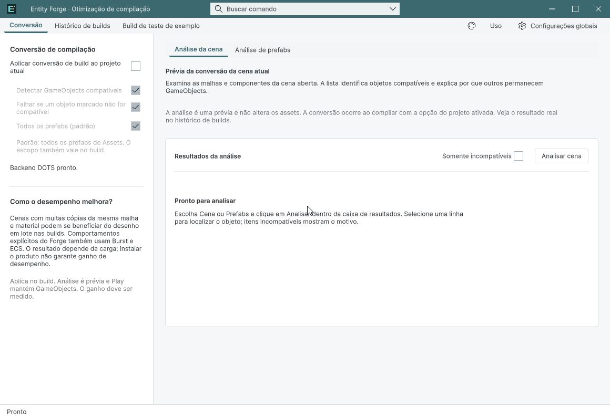
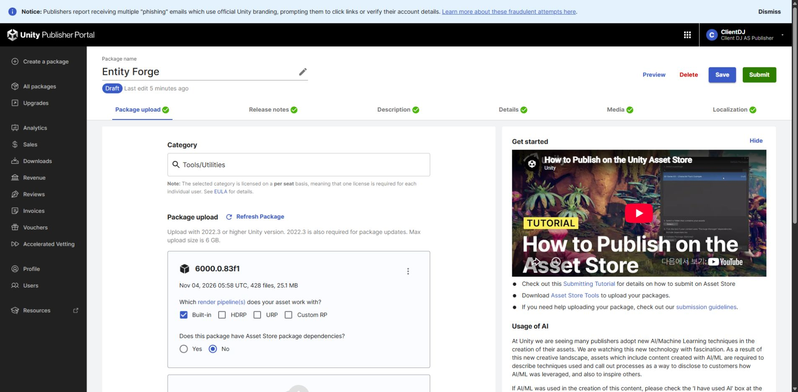

Tracefolio REPORTS & ISSUES
Tracefolio REPORTS & ISSUESEntity Forge 제출 준비 완료: UI QA·Validator·초안 저장
완료9언어/2테마와 실제 입력 QA, 공식 검사 28통과·오류0, 최종 428개 파일 업로드 및 판매 초안 저장 대조를 마쳤습니다. 제출은 하지 않았습니다.
작업 결과
요청한 UI QA, 공식 Validator, 판매 초안 저장을 마쳤습니다. 최종 패키지는 포털에서도 428 files / 25.1 MB로 집계됨을 확인했습니다. Draft·Free를 유지했고 Submit은 누르지 않았습니다.
변경 내용
적용 내용
공유 팝업이 키보드 NavigationSubmitEvent를 통해 Unity 기본 메뉴를 여는 경로를 차단했습니다. 빌드 완료 기록은 즉시 처리와 에디터 종료 훅으로 확정해 CI -quit에서 진행 중으로 남는 문제를 수정했습니다. 문서 9언어에 현재 창 캡처 18장을 갱신했습니다.
검증
Unity 6000.0.83f1, 실제 설치본에서 장면/프리팹 분석, 미지원 필터·선택 유지, 창 크기 조절, 기본 OFF와 하위 옵션, 밝고 어두운 선택/키보드 반환·취소를 확인했습니다. 9언어 전환·2테마는 공유 언어 API로 설정한 실제 창을 촬영해 검사했습니다. 모든 Inspector의 모든 조합을 검사한 의미는 아닙니다. 새 프로세스 재열기와 스크립트 재로드 후 커스텀 창 유지 확인. 공식 Asset Store Tools 11.3.1: 28 pass, 1 warning(문서 JPG), 0 fail. 실제 이전 BuildReport를 사용한 즉시 완료 및 batch -quit 종료 기록 검사 통과; 새 플레이어 빌드는 실행하지 않았습니다. 영어·한국어·일본어·중국어 설명/기술정보/AI와 출시 기록 저장 후 전체 새로고침 대조.



변경 전 기본 메뉴 노출은 실제 관찰했으나 해당 순간 파일 캡처는 보존하지 못했습니다. 전후 비교 검증 완료로 표시하지 않습니다. 기존 성능 근거는 이전 실측 보고서를 따르며 개선율을 모든 프로젝트에 일반화하지 않습니다.
최종 고정 SHA-256: 83f4db12aa0087fdccae802fd345d1231b6a767704c6ce1eb4c2940cee8e29f1, 26,312,954 bytes, 428 assets. Unity 네이티브 가져오기 완료 이벤트 및 427개 비설정 자산 바이트 일치, 이후 새 프로세스 공식 검사 28/1/0 통과. 초안 가격 Free 유지. 공식 검사 · 패키지 대조
2026-11-04 15:10 KST 재연결 후 최종 포털에서 428 files / 25.1 MB 확인. 앞선 0 files 표시는 해소됐으며 원인은 미확인입니다. 로컬 428개 원본과 일치하고 업로드 SHA도 고정값과 같습니다. 원격 다운로드 바이트 대조 자체는 미완료이나 업로드 원본·Success·포털 파일 수와 실제 로컬 네이티브 가져오기를 대조했습니다. Runtime/Dots/샘플 Runtime 17개 소스는 이전 최종 성능 컴파일 원본과 같거나 보존된 원본 대비 줄바꿈만 바뀌었음을 확인했습니다.

남은 사항
최종 제출은 사용자 요청대로 하지 않았습니다. 지원을 검증한 범위는 Windows x64, Unity 6000.0.83f1, Built-in, Entities 1.3.15입니다. 임의 MonoBehaviour 자동 변환·타 플랫폼/렌더 파이프라인과 설치만으로 일정 개선율 보장은 하지 않습니다. 문서 JPG 경고 1건은 남아 있습니다. 원격 다운로드 파일의 바이트 대조는 실행 확인을 못 했으며 필수 제출 준비 검증과 구분했습니다.
교훈 검토: NavigationSubmit 경로와 CI 종료 기록 확정은 프로젝트 근거로 보존했고 기존 전역 검증 규칙과 중복되어 전역 AGENTS 변경 없음.
작업 시간
- 제안 시간: 30
60분 · 최초 시작 2026-11-04 12:41:55 KST; 재개 예상 1525분 + 추가 10~15분 - 실제로 완료된 시간: 제품·포털 검증 완료 2026-11-04 15:12 KST: 최초 12:41:55부터 약 2시간 30분, 재개 14:12:46부터 약 59분 경과. 도구/서버 확인 대기 포함, 최초 30~60분 예상 초과. 보고서 공개 확인은 후속 배포 상태로 별도 대조합니다.
- XERJ: 실패 — XERJ node is not running. 현재 소스는 rg로 확인했습니다.